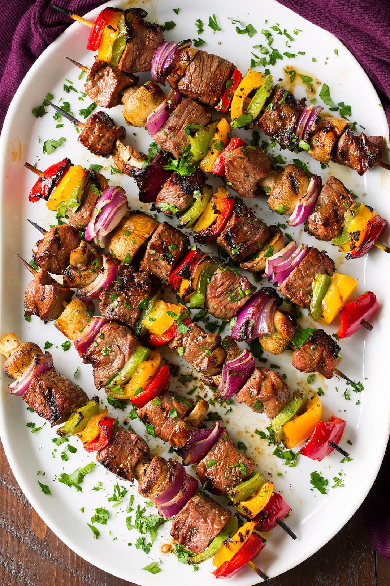

Authentic Kebab Recipe
Ingredients:
- 500g ground lamb or beef
- 2 cloves garlic, minced
- 1 small onion, finely chopped
- 2 tablespoons fresh parsley, chopped
- 1 teaspoon cumin
- 1 teaspoon paprika
- ½ teaspoon ground coriander
- ½ teaspoon salt
- ¼ teaspoon black pepper
- 1 tablespoon olive oil
- Wooden or metal skewers
Instructions:
- In a bowl, mix ground meat, garlic, onion, parsley, and spices.
- Shape the mixture into long, thin patties around skewers.
- Brush with olive oil.
- Grill on medium-high heat for about 10-12 minutes, turning occasionally.
- Serve with flatbread, salad, or a yogurt-based sauce.